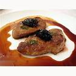

美食
法國的美食也很有名喔~我們舉了一些常見的食物，譬如蝸牛，馬卡龍呀，嘶~光是想像，就讓人流口水了呢！
法國的美食也很有名喔~我們舉了一些常見的食物，譬如蝸牛，馬卡龍呀，嘶~光是想像，就讓人流口水了呢！
Croissant 法文為“彎月”的意思，但你可能不知道，可頌的發源地其實是在奧地利維也納，一 般認為可頌發明源於1683年，當時土耳其預計在深夜時偷襲維也納，不過，被當地正在準備麵團的 麵包師傅們發現了，於是馬上通知當地政府，成功的阻擋了土耳其的偷襲計劃，後來，奧地利在波蘭的協助下，成功戰勝土耳其。
馬卡龍最早出現在義大利的修道院，當時有位名為Carmelie的修女為了替代葷食，而製作這種由杏仁粉製成的甜點，另外又稱為修女的馬卡龍，直到1533年佛羅倫斯公國公主凱薩琳·德·麥地奇與法蘭西王國國王亨利二世（King Henry II）結婚後，公主的隨從、僕人和廚師也陪嫁到法國，把義大利飲食文化和食譜一併帶到法國。

第一種是原產於歐洲東南部的法國大蝸牛，也被稱為羅馬蝸牛、勃艮第蝸牛。 法國大蝸牛外殼呈卵圓形，質地厚且不透明，表面多為灰白色或淺棕色，體螺層較大，螺旋部較小。 法國大蝸牛多棲息在森林、草地、花園等濕潤的環境中，以樹葉、果實、腐殖質等為食。 法國大蝸牛是法式蝸牛大餐的上上之選，價格最為高昂。
*小叮嚀，不是所有蝸牛都是可以吃的喔
鵝肝的歷史可以追溯到古埃及時代。居住在尼羅河沿岸的古埃及人發現，每到遷徙季節，鵝就會吃下大量食物，然後將食物的營養儲存在它們的肝臟里，以備旅途之需，這時候的鵝肝肥大且味美。但是法國卻不是鵝肝生產的第一大國，因為其殘忍的生產過程引起了法國國內動物保護組織的強烈反對，因此擁有悠久養鵝歷史的匈牙利就成為了鵝肝的生產的第一大國。
